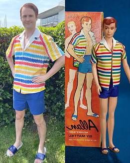
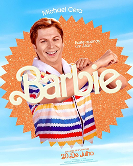

Sobre o Allan
Esquecido, como sempre...
Allan, interpretado por Michael Cera no filme "Barbie" (2023), trouxe uma nova camada de humor e carisma para o universo da franquia. Originalmente lançado pela Mattel em 1964 como o melhor amigo de Ken e promovido como um boneco cujas roupas cabiam em Ken, Allan se tornou um personagem de nicho dentro do mundo Barbie. Entretanto, sua presença no filme revitalizou sua imagem, transformando-o em um dos personagens mais queridos da produção.
No longa, Allan é retratado como um personagem que se sente deslocado dentro do mundo perfeito da Barbielândia. Enquanto os outros Kens competem por atenção e status, Allan se destaca por sua personalidade mais sensível e questionadora. Essa abordagem gerou identificação com o público, tornando-o um favorito entre os fãs do filme. Além disso, sua representação vai além do cômico, simbolizando aqueles que não se encaixam nos padrões tradicionais, mas encontram seu valor e propósito de maneira autêntica.
Com um figurino fiel ao boneco original e uma atuação marcante de Michael Cera, Allan se tornou um símbolo da inclusão e da diversidade dentro da narrativa do filme. Sua jornada reflete a busca por identidade em um mundo que muitas vezes valoriza a conformidade, transmitindo uma mensagem de autoaceitação e individualidade.
O impacto do personagem foi tão grande que despertou um novo interesse pelo boneco Allan no mundo real, levando a um aumento na sua popularidade entre colecionadores e novos fãs. Com isso, Allan prova que mesmo os personagens esquecidos podem brilhar novamente, conquistando seu espaço na história da Barbie.

